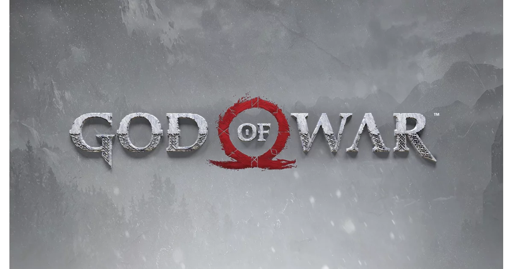
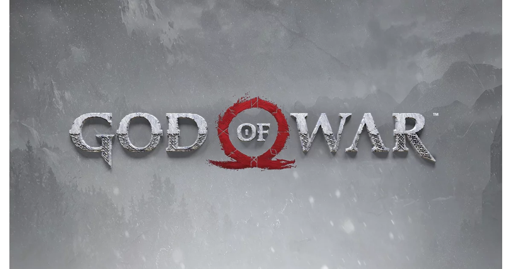
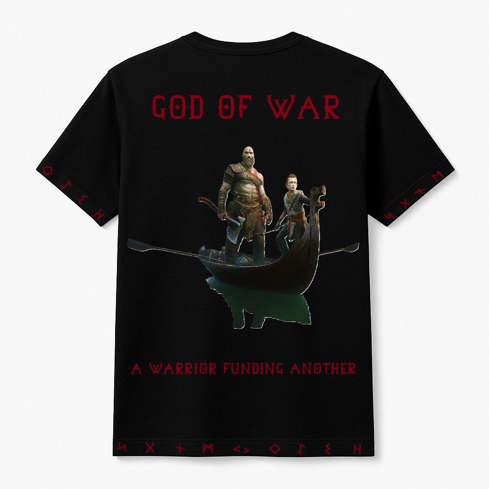
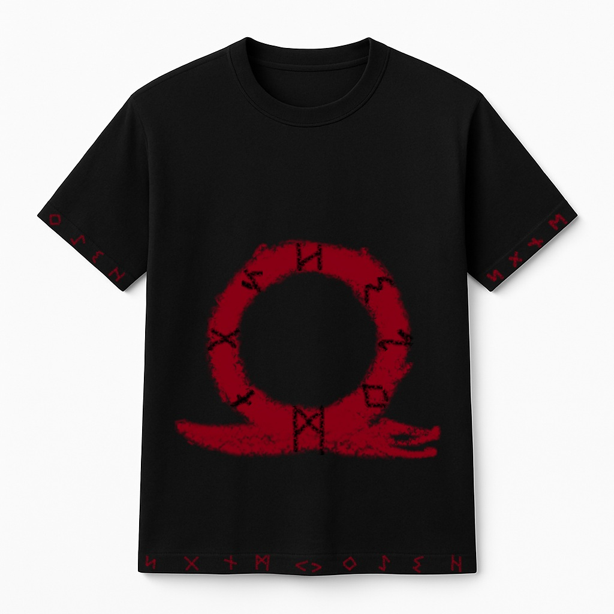

God of War
Desata tu furia. Cambia el destino de los dioses.

Desarrollado por Santa Monica Studio
Desata tu furia. Cambia el destino de los dioses.
Desarrollado por Santa Monica Studio
God of War (2018) una reinvención de la saga clásica, en la que Kratos y Atreus su hijo, se adentran por un mundo oscuro y misterioso basado en la mitología nórdica. Únete a ellos mientras enfrentan desafíos titánicos, criaturas míticas y, su relación desde la pérdida de la madre de atreus y cómo lo afrontan padre e hijo lo que los guiará guía su destino.
ESCRIBIR HISTORIA AQUÍ
Combate Dinámico y Táctico: El sistema de combate de God of War se basa en una jugabilidad fluida y estratégica. Kratos empuña su hacha Leviatán, que puede lanzar, devolver y usar para enfrentar a enemigos gigantescos. Además, Atreus no es solo un acompañante; su arco y habilidades mágicas juegan un papel crucial en las batallas.
Misterios y Puzzles: El mundo de God of War está lleno de antiguos secretos y puzzles que desafían la mente. Ya sea desbloqueando pasajes ocultos o resolviendo acertijos basados en la mitología nórdica, cada reto supera la simple acción y ofrece una experiencia inmersiva.
Enemigos Legendarios y Dioses Poderosos: A lo largo de la aventura, Kratos y Atreus se enfrentan a una serie de enemigos míticos, desde monstruos gigantes hasta dioses nórdicos. Cada combate es una prueba de habilidad, estrategia y resistencia.
Personalización y Progresión: A medida que avanzas en el juego, puedes mejorar las habilidades de Kratos y Atreus. Personaliza sus armas, armaduras y poderes para adaptar su estilo de combate a tu preferencia, enfrentando desafíos cada vez mayores con nuevas habilidades.
 
La versión final está prevista para marzo de 2026.
PC, PS5 y más adelante en Xbox Series.
Sí, debes participar en un sorteo con entrada de 35€ en el que habrán 50 afortunados que tendrán el acceso anticipado.
ATENCIÓN: Esta página simula la campaña de microfinanciación de un videojuego ficticio y no representa un producto real. Práctica de Multimedia, 1º GDDV - Curso 24/25 (Móstoles/Quintana), URJC. La URJC no se hace responsable del contenido expuesto por el autor.